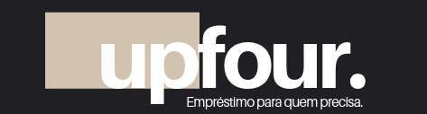
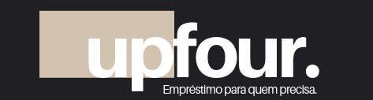

Home
 

Mussum Ipsum, cacilds vidis litro abertis. Si num tem leite então bota uma pinga aí cumpadi! A ordem dos tratores não altera o pão duris. Leite de capivaris, leite de mula manquis sem cabeça. Copo furadis é disculpa de bebadis, arcu quam euismod magna. Manduma pindureta quium dia nois paga. Si u mundo tá muito paradis? Toma um mé que o mundo vai girarzis! Diuretics paradis num copo é motivis de denguis. Nec orci ornare consequat. Praesent lacinia ultrices consectetur. Sed non ipsum felis.
Sobre nós
Se hoje é o dia das crianças... Ontem eu disse: o dia da criança é o dia da mãe, dos pais, das professoras, mas também é o dia dos animais, sempre que você olha uma criança, há sempre uma figura oculta, que é um cachorro atrás. O que é algo muito importante! Todos as descrições das pessoas são sobre a humanidade do atendimento, a pessoa pega no pulso, examina, olha com carinho. Então eu acho que vai ter outra coisa, que os médicos nos trouxeram pro brasil, um alto grau de humanidade.
Serviços
Uma explicação breve dos serviços com imagem
Depoimentos
- Depoimento 1 com imagem
- Depoimento 2 com imagem
- Depoimento 3 com imagem
Contato
Mussum Ipsum, cacilds vidis litro abertis. Paisis, filhis, espiritis santis. Não sou faixa preta cumpadi, sou preto inteiris, inteiris. Quem manda na minha terra sou euzis! Praesent vel viverra nisi. Mauris aliquet nunc non turpis scelerisque, eget. Mauris nec dolor in eros commodo tempor. Aenean aliquam molestie leo, vitae iaculis nisl. Viva Forevis aptent taciti sociosqu ad litora torquent. Sapien in monti palavris qui num significa nadis i pareci latim. Interessantiss quisso pudia ce receita de bolis, mais bolis eu num gostis.